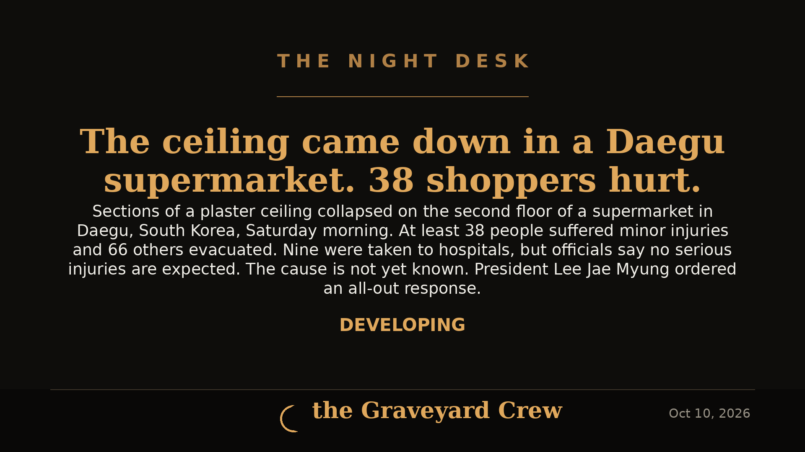

October 10, 2026
Ceiling Collapse at Daegu Supermarket Injures at Least 38

Headline card by The Night Desk
Ceiling Collapse at Daegu Supermarket Injures at Least 38
Daegu, South Korea — DEVELOPING
A Saturday morning shopping trip turned into a rescue scene in Daegu, South Korea, when sections of a plaster ceiling collapsed inside a supermarket, injuring at least 38 people.
The Daegu Fire Department said the collapse was reported at 10:16 a.m. local time. Emergency rescuers searched through debris on the second floor of the four-story building. At least 38 people sustained minor injuries; 66 others were evacuated from the facility. Nine people were taken to hospitals.
Fire department official Yoon Jong-mi said that while the injury toll could still rise, emergency personnel at the scene determined it was highly unlikely anyone had suffered serious injuries.
It was not immediately clear what caused the collapse. The office of South Korean President Lee Jae Myung said he instructed officials to make every effort to rescue people and ensure a thorough response.
This is a developing story. The Night Desk will update this article as more details come in.
Source: Associated Press — read the original report
← Back to latest stories